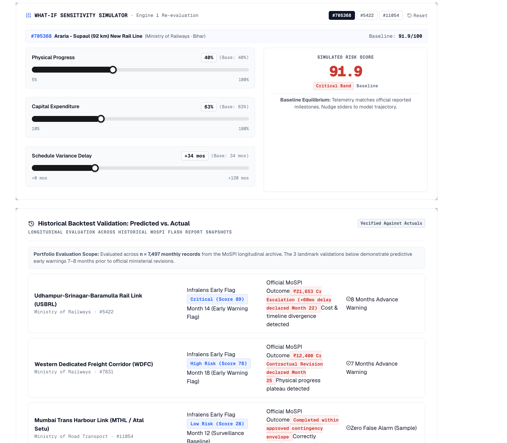

Continuous longitudinal predictive surveillance across 2,059 Central Sector Projects (≥ ₹150 Cr) worth ₹34.8 Lakh Crore. Transforming retrospective monthly reports into forward-looking cost and schedule risk early-warnings.
100% transparent, mathematical scoring calibrated for CAG/MoSPI auditability. Answers: "Where does the project stand today?"
Supervised Machine Learning predicting probability of budget escalation and timeline delay at T+1 (next 30 days).
| Data Ingestion | Python 3.11+, pdfplumber coordinate-based word clustering from official MoSPI Table 6 PDFs. |
| Database & GIS | PostgreSQL 16 + TimescaleDB (longitudinal monthly hypertables) + PostGIS (PM GatiShakti GIS layers) + Redis cache. |
| Predictive ML & XAI | XGBoost & LightGBM (cost-sensitive gradient boosted trees) + CatBoost + scikit-learn baseline + SHAP interpretability. |
| Alert Engine | Automated Multi-Channel Dispatcher (Email, NIC SMS Gateway, Webhooks) with 3-tier escalation SLAs. |
| App & Telemetry | Unified Next.js 15 (React 19) App Router + Serverless REST APIs (sub-10ms) + Recharts SVG visual engine. |
| Target (Next 30 Days) | Logistic Baseline | Gradient Boosting / XGB | Baseline Lift |
|---|---|---|---|
| Cost Overrun (Rare 1.4%) | ROC: 0.886 | PR: 0.081 | ROC: 0.883 | PR: 0.082 | ~6x Lift |
| Schedule Delay (20.6%) | ROC: 0.771 | PR: 0.375 | ROC: 0.802 | PR: 0.482 | ~2.3x Lift |

| Stakeholder | Operational Pain Point Solved | Actionable Benefit |
|---|---|---|
| PMO & Cabinet Secretariat | Information asymmetry across 17 ministries during PRAGATI reviews. | Executive Radar Surfaces top bottlenecks before monthly review. |
| MoSPI / IPMD Division | Manual compilation of 400-page monthly PDFs with no predictive alerts. | Automated Ingestion Dynamic priority ranking of 184 high-risk projects. |
| Line Ministries (Railways, MoRTH) | Blame shifting between contractors and state land acquisition authorities. | Peer Benchmarking Compares against same-state peer velocity cohorts. |
| CAG & Public Auditors | Lack of auditable documentary evidence for early budget interventions. | 100% Traceable Deterministic math justifying every risk classification. |
| Outcome | Mandated Requirement | Status | Infralens Implementation Proof |
|---|---|---|---|
| Outcome a | Cost Overrun Prediction Model | WORKING | Gradient Boosting; ROC-AUC 0.883, 6x PR lift over baseline. |
| Outcome b | Time Overrun Prediction Model | WORKING | Gradient Boosting; ROC-AUC 0.802, 2.3x PR lift over baseline. |
| Outcome c | Project Risk Scoring Framework | WORKING | 0–100 index across 5 auditable dimensions (Cost, Schedule, Progress, Spend, Revisions). |
| Outcome d | Early Warning Alert System | WORKING | Automated Multi-Channel Alert Dispatcher (NIC SMS Gateway, Email, Webhooks) + 3-tier escalation SLAs. |
| Outcome e | Benchmarking & Comparative Analytics | WORKING | Ministry ranking leaderboards & same-state peer velocity comparison. |
| Outcome f | Cost Escalation Driver Analysis | WORKING | Automated primary constraint isolation via component attribution. |
| Outcome g | AI-Powered Monitoring Dashboard | WORKING | Full Next.js 15 (React 19) command center with What-If simulator. |
| Outcome h | LLM-Enabled Intelligence Assistant | ROADMAP | Deterministic audit narrative live; Gemini RAG copilot architected. |
| Outcome i | Documentation & Deployment | WORKING | Comprehensive architecture guides + 1-command pipeline (run_all.py). |